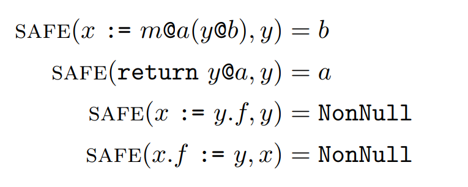
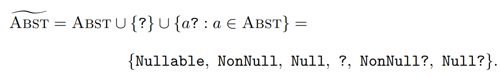
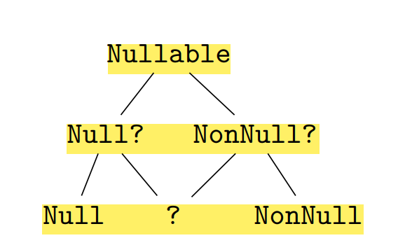
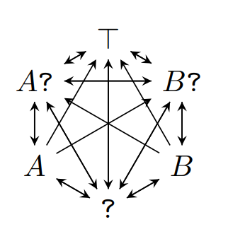

Gradual Program Analysis for Null Pointers
- Sam Estep Carnegie Mellon University, Pittsburgh, PA, USA
- Wise Carnegie Mellon University, Pittsburgh, PA, USA
- Jonathan Aldrich Carnegie Mellon University, Pittsburgh, PA, USA
- Éric Tanter Computer Science Department (DCC), University of Chile, Santiago, Chile
- Johannes Bader Jane Street, New York, NY, USA
- Joshua Sunshine Carnegie Mellon University, Pittsburgh, PA, USA
Nullness Check
- 标记: @Nonnull, @Nullable
- 位置：方法的参数和返回值
- 现有工具: Facebook’s Infer Eradicate, Uber’s NullAway, NullSafe, Java Nullness Checker
- 当标记缺失，现有的工具会补上一个默认的标记：
- Infer Eradicate, Java Nullness Checker: @Nonnull
- NullAway: 汇(sink)=@Nullable，源(sources)=@Nonnull
- 这会导致False Positive，同时是unsound的
Example of False Positive
class Main {
static String reverse (String str) {
if (str == null) return new String();
StringBuilder builder = new StringBuilder(str);
builder.reverse();
return builder.toString();
}
public static void main (String [] args) {
String reversed = reverse(null);
String frown = reverse(":)");
String both = reversed.concat(frown);
System.out.println(both);
}
}
- Infer Eradicate, Java Nullness Checker: @NonNull
- 行9出现警告，是FP
Example of False Negative
class Main {
static String reverse (String str) {
if (str == null) return null;
StringBuilder builder = new StringBuilder(str);
builder.reverse();
return builder.toString();
}
public static void main (String [] args) {
String reversed = reverse(null);
String frown = reverse(":)");
String both = reversed.concat(frown);
System.out.println(both);
}
}
- 行3出现警告，是FP
- 行11没有警告，是FN（reserved是null）
Gradual Null Pointer Analysis
- 不添加默认标记
- 乐观处理：当标记缺失而无法检查，那就不检查
- 这样必然是unsound的，因此添加动态检查
- 乐观的静态检查减少FP + 动态检查保证soundness
class Main {
static String reverse (String str) {
if (str == null) return new String();
StringBuilder builder = new StringBuilder(str);
builder.reverse();
return builder.toString();
}
public static void main (String [] args) {
String reversed = reverse(null);
String frown = reverse(":)");
String both = reversed.concat(frown);
System.out.println(both);
}
}
class Main {
static String reverse (String str) {
if (str == null) return null;
StringBuilder builder = new StringBuilder(str);
builder.reverse();
return builder.toString();
}
public static void main (String [] args) {
String reversed = reverse(null);
String frown = reverse(":)");
String both = reversed.concat(frown);
System.out.println(both);
}
}
PICL: A Procedural Imperative Core Language
- 一种对编程语言的抽象
Control Flow Graph


Dynamic Semantics
- 对程序（PICL）动态行为的建模
- 主要用于后面形式化的证明


A Static Null-Pointer Analysis for PICL
- 我们先形式化静态分析的过程
- 且假设所有标记都打上了，也就是没有“?”的情况
- 我们将证明在这种情况下静态分析是sound的
Semilattice of Abstract Values
- 静态检查的方法是数据流分析
- 数据流是每个变量有三种状态：Nullable，Null，Nonnull
- 具体化函数（concretization function）：三种状态所代表的具体取值范围
- conc(Nullable) = Val, conc(Null) = {0}, conc(NonNull) = Val \ {0}
Transfer Function
Fixpoint Algorithm

Static Warnings
- 安全函数(safe function)：用来检查数据流值是否满足指令要求的状态，不然就报错 
- σ(x) ⊑ safe(x)
Soundness of NPA

Gradual Null-Pointer Analysis
- 考虑缺失标记的情况，对原来NPA进行改造
- 数据流值
- 半格
- 序：定义“⊑”；不是偏序；主要用于safe函数（也就是检查）



Gradual Null-Pointer Analysis
- 传递函数
- safe function
- 不动点算法不变
- 设计思路?